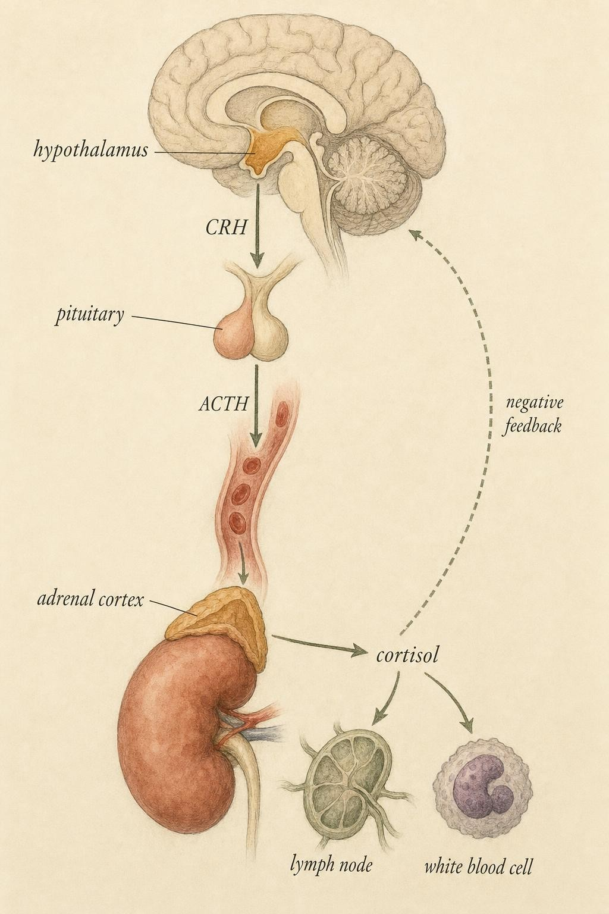
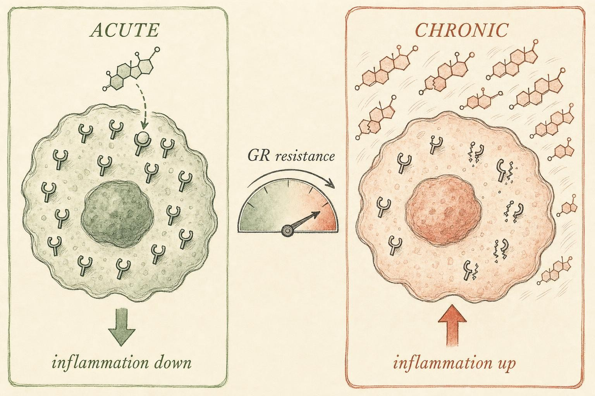

The Weight We Carry: Allostatic Load and the Stressed Immune System
How a hormone built to calm inflammation ends up feeding it.
A graduate student stays up until 3 a.m. finishing a grant, sleeps four hours, drinks three coffees, argues with a collaborator, and skips lunch. By the time she gets home she has a scratchy throat. She tells herself she "always gets sick when things get busy," and she is not imagining a connection. Her nervous system has spent the day broadcasting chemical alarms to organs that never heard the alarm consciously , her adrenal glands, her bone marrow, her circulating white cells. Those messages are real, measurable, and, when repeated week after week, biologically expensive.
This chapter is about the price tag on that expense , a concept called allostatic load , and about a paradox at the center of stress immunology. The very hormone that dampens inflammation in the short term becomes, over months of relentless activation, an engine of the low-grade inflammation we spent earlier chapters learning to fear. To understand how a brake turns into an accelerator, we have to build the stress-immune axis from the ground up.
What "stress" actually is
In everyday speech, stress is a feeling , the tight chest before an exam. In physiology it is something more precise: a coordinated bodily response to a real or perceived challenge to homeostasis, the tendency of internal variables (temperature, blood glucose, pH) to be held near set points. A stressor is the challenge; the stress response is the body's orchestrated reply. Crucially, the response is triggered not only by physical threats , a wound, a cold room, an infection , but by the brain's appraisal of a situation as threatening, novel, or uncontrollable. A looming deadline mobilizes the same core machinery as a predator, because the brain, not the bloodstream, calls the alarm.
That alarm runs on two parallel wires. The fast wire is the sympathetic-adrenal-medullary (SAM) axis: within seconds, the sympathetic nervous system fires and the adrenal medulla dumps catecholamines , adrenaline (epinephrine) and noradrenaline (norepinephrine) , into the blood. Heart rate climbs, pupils widen, glucose floods out of the liver. The slow wire is the hypothalamic-pituitary-adrenal (HPA) axis, which unfolds over minutes to hours and is the main subject of this chapter.
A brief history: Selye's stages
Long before anyone could measure a cytokine, the endocrinologist Hans Selye noticed that rats exposed to almost any noxious stimulus, cold, injected toxin, forced exercise, developed the same trio of internal changes: enlarged adrenal glands, shrunken thymus and lymph nodes, and stomach ulcers. He concluded that the body mounts one generic defensive program regardless of the specific insult, and he named it the General Adaptation Syndrome (GAS). Selye described three stages. In the alarm reaction, the SAM and HPA axes fire and resources mobilize rapidly. If the stressor persists, the body enters the stage of resistance, in which outward signs of alarm fade because physiological effort has resettled at a new, elevated operating point that can be sustained for a while. If the stressor still does not end, the system enters the stage of exhaustion, in which the resources that sustained resistance run out and the same mediators that once protected begin to cause damage, adrenal exhaustion, immune collapse, and organ injury. Selye also coined the words eustress, for stress that is short lived and experienced as a manageable or even energizing challenge, and distress, for stress that overwhelms coping capacity. Notice how closely his stage of exhaustion anticipates the concept this chapter is built around: a defense system that, run too long without relief, becomes the injury. Allostatic load, developed decades later, gives that intuition a precise physiological vocabulary and a way to measure it in blood and saliva rather than just in adrenal weight at autopsy.
Not all stressors are alike
A theme that will recur through this chapter is that the immune consequences of stress depend enormously on the stressor's shape in time, not merely its intensity. Researchers who study this field, most systematically Suzanne Segerstrom and Gregory Miller in the meta-analysis discussed later, typically sort stressors into a small number of categories. An acute time limited stressor lasts minutes, a public speaking task, a timed math problem, a threat of electric shock in a laboratory. A brief naturalistic stressor lasts days to weeks and centers on a real life event with a known endpoint, studying for and taking a licensing exam. A stressful event sequence follows a single precipitating event, job loss or divorce, through its practical and emotional aftermath over months. A chronic stressor persists for months to years with no clear end in sight, caring for a spouse with dementia, living with a disability, working a job with high demand and low control. A distant stressor is a traumatic experience that occurred in the past but continues to shape present physiology, combat exposure or childhood abuse. And daily hassles are small, low grade irritants, traffic, a difficult coworker, that add up not because any single one is severe but because they recur relentlessly. Hold this taxonomy loosely in mind. By the end of the chapter you will see that acute, brief, and chronic stressors point the immune system in genuinely different directions, and the taxonomy is the reason why.
The HPA axis, step by step
Trace the cascade. The hypothalamus, a small region at the base of the brain, releases corticotropin-releasing hormone (CRH) into a private portal circulation. CRH travels a few millimeters to the anterior pituitary gland, which responds by secreting adrenocorticotropic hormone (ACTH) into the general bloodstream. ACTH reaches the outer layer , the cortex , of the adrenal glands perched atop the kidneys, and there stimulates the synthesis and release of cortisol. Cortisol is the final effector, the molecule that actually travels to distant tissues and rewrites their behavior.
A little more anatomy sharpens this picture. The CRH-releasing neurons cluster in a specific hypothalamic region called the paraventricular nucleus (PVN). In the pituitary, ACTH does not exist ready made in a vial; it is clipped out of a much larger precursor protein called pro-opiomelanocortin (POMC), which can also be cleaved into other signaling fragments, including some of the body's natural opioid peptides, a detail that hints at why the stress and pain systems are so intertwined. The adrenal cortex itself is organized into three concentric zones, each making a different steroid: the outer zona glomerulosa makes aldosterone, a hormone that regulates salt and water balance; the middle zona fasciculata, the largest zone and the one ACTH targets most strongly, makes cortisol; and the inner zona reticularis makes weak androgens. Cortisol synthesis begins with cholesterol, which a rate limiting protein called the steroidogenic acute regulatory protein escorts into the mitochondria of the adrenal cell, where a sequence of enzymes converts it, in several steps, into the finished cortisol molecule. This is worth knowing because it means the whole cascade, from a thought in the cortex to a molecule of cortisol reaching an immune cell, is a multi step biological assembly line, and each step is a potential point of individual variation.
The system is self braking. Cortisol itself binds receptors in the hypothalamus and pituitary and shuts down further CRH and ACTH release , a negative feedback loop that, in a healthy system, returns cortisol to baseline once the threat passes. A third feedback site matters just as much: the hippocampus, a brain structure central to memory, is unusually dense with glucocorticoid receptors and normally exerts a strong inhibitory tone on the PVN. This feedback operates on two timescales. A fast, non genomic form of feedback, thought to work through glucocorticoid receptors near the cell membrane rather than in the nucleus, can begin damping CRH neuron firing within minutes, before cortisol has had time to alter any gene. A slower, genomic form of feedback works over hours, as cortisol acting through the classic intracellular receptor changes the expression of genes that keep CRH and ACTH production in check. Hold onto the idea of feedback; when it fails, allostatic load follows.
Two receptors, two jobs: MR and GR
Cortisol does not act through a single receptor. It engages two related but distinct intracellular receptors that differ enormously in how tightly they bind the hormone. The mineralocorticoid receptor (MR), sometimes called the Type I receptor, has such high affinity for cortisol that it is substantially occupied even at the low, resting concentrations present between stressors and overnight. The glucocorticoid receptor (GR), the Type II receptor and the one this chapter focuses on, has roughly tenfold lower affinity, so it becomes meaningfully occupied only when cortisol rises well above its resting baseline, during the morning peak of the daily rhythm or during an acute stress response. This two receptor arrangement is elegant allostatic engineering: MR provides a constant, low level tone that helps maintain the hippocampus and other tissues under ordinary conditions, while GR is reserved as a higher threshold system that only engages, and only exerts its powerful anti-inflammatory and metabolic effects, when the body actually needs an emergency response. Much of what goes wrong under chronic stress can be understood as an imbalance in this MR to GR ratio and in how much of the day GR spends occupied.
The rhythm and the brake
Cortisol is not released at a constant trickle. It follows a strong diurnal rhythm: levels are lowest in the middle of the night, begin rising before waking, and produce a sharp additional surge in the thirty to forty five minutes after a person opens their eyes, a well studied phenomenon called the cortisol awakening response (CAR). Levels then decline gradually across the day to a low point near bedtime. Superimposed on this daily arc is a faster, roughly hourly pattern of pulsatile bursts, called ultradian rhythm, so that even a single blood draw captures one point on a constantly oscillating signal rather than a steady state. Once released, cortisol travels through the blood mostly bound to a carrier protein called corticosteroid binding globulin (CBG), also known as transcortin; only the small unbound, or free, fraction is able to enter cells and act on receptors, which is why researchers increasingly measure free cortisol in saliva rather than total cortisol in blood. The rhythm is not decorative. Tissues appear to be tuned to expect cortisol's rise and fall, and receptor sensitivity itself varies across the day, so a flattened rhythm, high at night, low in the morning, is not simply "more cortisol" or "less cortisol", it is a different and less informative signal arriving at a time the tissue is not prepared to receive it. That distinction, the shape of the curve rather than any single number, becomes central once we turn to chronic stress.

The HPA cascade: brain to adrenal to immune cell, with the feedback brake that keeps it in check." data-image-idx="0" style="display:block;max-width:100%;max-height:75vh;height:auto;width:auto;margin:0 auto;cursor:pointer;">Cortisol as a glucocorticoid
Cortisol belongs to a class of steroid hormones called glucocorticoids , literally "glucose-cortex" hormones, named because early physiologists noticed they raise blood glucose and are made by the adrenal cortex. That name captures one of cortisol's two great jobs: it is a metabolic mobilizer. It liberates energy by promoting gluconeogenesis (new glucose synthesis in the liver), breaking down proteins and fats, and making that fuel available to muscle and brain. From an evolutionary view this is the logic of the emergency: whatever the threat, movement and vigilance cost energy, and cortisol pays the bill.
The second job , the one that matters most here , is immunomodulation. Cortisol is one of the most powerful endogenous regulators of the immune system we possess. This is not a coincidence discovered late; it is why synthetic glucocorticoids (prednisone, dexamethasone, hydrocortisone) are among medicine's most-prescribed anti-inflammatory drugs. We will treat their therapeutic use as a Chapter 9 question. Here we care only about the natural hormone and the mechanism by which it speaks to immune genes.
How a steroid rewrites gene expression
Because cortisol is a lipid-soluble steroid, it does not need a surface receptor , it diffuses straight through the cell membrane into the cytoplasm. There it binds the glucocorticoid receptor (GR), a protein that normally sits inactive, chaperoned by a complex of heat shock proteins, including one called HSP90, along with several smaller helper proteins known as immunophilins. Binding cortisol changes the receptor's shape, releases the chaperone complex, and exposes a signal that ferries the hormone receptor complex into the nucleus, where two GR molecules typically pair up, or dimerize, before acting on DNA. Inside the nucleus the activated GR acts as a transcription factor , a protein that turns genes on or off , through two broad mechanisms.
In transactivation, the GR dimer binds specific DNA sequences called glucocorticoid response elements and increases transcription of target genes , many of them anti-inflammatory, such as the gene for IκBα, an inhibitor that traps the master inflammatory switch nuclear factor kappa B (NF-κB) in the cytoplasm, and the gene for a protein called GILZ, short for glucocorticoid induced leucine zipper, which independently interferes with NF-κB and with another inflammatory switch called activator protein 1 (AP-1). In transrepression, the GR does not need to bind DNA directly at all; instead it physically tethers itself to NF-κB and AP-1 where they already sit on DNA, and by doing so it blocks the machinery those factors need to recruit, including shared helper proteins called coactivators, preventing them from switching on the cytokine genes we met in Chapter 3. The net effect: activated GR signaling suppresses production of pro-inflammatory cytokines such as tumor necrosis factor alpha (TNF-α), interleukin-1 beta (IL-1β), and interleukin-6 (IL-6), while sparing or boosting anti-inflammatory ones like interleukin-10 (IL-10).
Not every effect of cortisol on an immune cell waits for new genes to be built. A smaller, faster set of effects, sometimes called non-genomic, appears to work through receptor-like molecules near or within the cell membrane and can begin altering immune cell behavior within minutes, well before the transcription factor mechanism above has had time to change protein levels. This rapid channel helps explain why an acute cortisol pulse can already be shaping an immune response before its slower, genomic effects even begin.
One more detail earns its place here because it will matter enormously later in the chapter. The gene for the glucocorticoid receptor can be spliced in more than one way, producing, alongside the normal, cortisol-binding receptor now labeled GRα, a second, shorter version called GRβ. GRβ cannot bind cortisol properly and cannot activate transcription on its own, but it can still enter the nucleus and physically crowd out GRα at the same DNA sites and shared coactivator proteins, acting as what biologists call a dominant negative, a molecule that blunts the function of its normal counterpart simply by getting in the way. A cell that manufactures relatively more GRβ becomes, in effect, harder of hearing to cortisol even if its cortisol supply and its GRα gene are both perfectly normal. Keep GRβ in mind; it will resurface as one concrete mechanism behind glucocorticoid resistance.
Keep that logic crisp, because the paradox depends on it: when cortisol reaches an immune cell and the GR pathway is working, inflammation goes down. The entire mystery of chronic stress is what happens when that "if the GR is working" clause fails.
Allostasis: stability through change
Homeostasis , holding variables constant , is only half the story of how bodies stay alive. The other half is allostasis, a term Bruce McEwen and colleagues brought to prominence, defined as achieving stability through change (McEwen, 1998). The idea is that to keep the truly vital variables stable, the body must actively vary its regulatory outputs. Blood pressure is not held rigidly constant; it rises when you stand, sprint, or face a stressor, precisely so that perfusion of the brain stays adequate. Cortisol is not held flat; it swings on a daily rhythm , high in the early morning to mobilize you for the day, low at night , and it surges on demand. This flexibility is the health of the system.
McEwen's key move was to name the cost of all this adaptive flexibility. The mediators of allostasis , cortisol, catecholamines, cytokines , are protective in the short run but damaging when overused. He called the cumulative wear-and-tear from repeated cycles of activation, or from a response that fails to shut off, the allostatic load (McEwen, 1998). When challenges exceed a person's capacity to adapt, load tips into allostatic overload , the state at which the very systems that protect begin to injure (Guidi et al., 2020). McEwen later drew a further distinction, sometimes framed as two types of overload, that is worth carrying forward. In one pattern, sometimes called Type 1 overload, an organism's actual resources are insufficient to meet a demand, an animal facing true starvation or a person facing genuine, unmet survival needs, and the stress response, however costly, is doing necessary work. In the other pattern, Type 2 overload, resources are objectively adequate, but psychological or social factors, a demanding job, a difficult relationship, chronic worry, keep the stress response switched on anyway. Much of modern chronic stress, including the graduate student who opened this chapter, falls into this second category: the threat is rarely a saber toothed cat, yet the same ancient machinery answers the call every time the brain appraises a deadline as dangerous.
Four ways the system wears out
McEwen described several distinct patterns by which allostatic mediators become damaging , worth memorizing because each maps onto a real cortisol profile:
Repeated hits: frequent stressors, each triggering a normal response, but too often for recovery , the daily-deadline life, in which cortisol properly rises and properly falls after each event, but the events themselves never leave enough room between them. Failure to habituate: the response that never dampens even when the stressor repeats, so novelty-sized cortisol surges keep firing, as when a person continues to mount a full stress response to a public speaking task they have now performed dozens of times. Failure to shut off: a response that stays elevated after the stressor ends, because the negative-feedback brake is weak , the flattened, chronically high cortisol curve described above, often seen when a stressor is uncontrollable or unresolved. Inadequate response: paradoxically, a blunted output where cortisol fails to rise enough, so its normal restraint on inflammation is lost and other mediators (cytokines) run unchecked, a pattern seen in some long-duration or trauma-related stress states.
Notice that both too much and too little cortisol produce load. This is the first hint that the relationship between cortisol and inflammation is not a simple dial but a regulated conversation that can break in more than one direction.
Measuring the weight: allostatic load biomarkers
Allostatic load began as a concept, but its power for research came from making it measurable. Rather than track any single hormone, Juster, McEwen, and Lupien (2010) and others operationalized allostatic load as a multi-system biomarker index , a composite score built from indicators across four physiological domains: neuroendocrine (cortisol, catecholamines, dehydroepiandrosterone sulfate, abbreviated DHEA-S, a counter-regulatory adrenal hormone that tends to move opposite to cortisol under chronic strain), immune/inflammatory (C-reactive protein, or CRP, a liver protein whose blood level rises with systemic inflammation; interleukin-6; and fibrinogen, a clotting protein that also rises with inflammation), metabolic (glucose, insulin, cholesterol, and waist-hip ratio, a simple measurement that flags the visceral, or deep abdominal, fat most strongly linked to metabolic disease), and cardiovascular (blood pressure, and heart rate variability, or HRV, a measure of the beat-to-beat timing variation in the heartbeat that tends to fall as chronic strain rises). A typical index does not just average these values; it usually counts how many of roughly ten such biomarkers sit in the riskiest quartile for a person's age and sex, so the final score behaves like a tally of how many systems are simultaneously running hot.
The clinical payoff is substantial. A high allostatic-load index predicts morbidity and mortality beyond what any single traditional risk factor captures (Juster et al., 2010). It forecasts cognitive decline, cardiovascular events, and all-cause mortality in aging cohorts. Guidi et al. (2020), synthesizing studies through 2019, confirmed that allostatic overload is consistently associated with worse outcomes across exactly these systems , which is why the concept has migrated from stress physiology into mainstream preventive medicine. The immune/inflammatory domain sits at the heart of that index, and understanding why is the goal of the rest of this chapter.
One practical wrinkle deserves mention because it shapes how researchers actually study this system. A single saliva or blood sample captures cortisol at one instant on a rhythm that is constantly moving, which makes single-time-point cortisol a noisy measure of anything chronic. Two approaches have partly solved this. The first collects several saliva samples across a single day, at waking, thirty minutes later, midday, and evening, to reconstruct the diurnal slope rather than a single point; a shallow slope, in which morning and evening values sit close together, is one of the more reliable signatures of chronic strain. The second, newer approach measures cortisol that has been incorporated into a growing strand of scalp hair, which, because hair grows at a fairly predictable rate, provides a retrospective, integrated readout of average cortisol exposure over the prior one to three months, rather than a snapshot. Neither method is a diagnostic test on its own, a point we will return to at the end of the chapter.
The paradox: acute versus chronic
Now we can state the puzzle precisely. If cortisol is anti-inflammatory , if activated GR shuts down NF-κB and starves the cytokine genes , then more stress should mean less inflammation. Yet the epidemiology is emphatic in the opposite direction: chronically stressed people show higher circulating inflammatory markers, worse wound healing, poorer vaccine responses, and greater susceptibility to infection. How can the same hormone do both?
The resolution lies in a distinction that Segerstrom and Miller (2004) made rigorous in a landmark meta-analysis of more than 300 studies spanning thirty years of research. They found that the immune consequences of stress depend almost entirely on the stressor's time course, the same taxonomy of acute, brief, chronic, and distant stressors introduced earlier in this chapter. Acute stressors , lasting minutes, like a public-speaking task in the lab , produce adaptive upregulation of natural immunity: natural killer (NK) cells and granulocytes surge into the blood, ready for the wound or microbe that a fight-or-flight moment might bring. This is the body pre-positioning its front-line defenders. Acute cortisol and catecholamines are, in this window, mobilizing and broadly protective.
How acute stress redeploys the immune army
The mechanism behind that acute surge turns out to be about geography as much as chemistry. Research associated with the immunologist Firdaus Dhabhar traced the rise in circulating NK cells and other leukocytes during acute stress to a phenomenon best described as redeployment rather than production: the cells were already present in the body, largely parked in the spleen, bone marrow, and lung, and a brief pulse of catecholamines and cortisol together drives them rapidly out of those reservoirs and into the blood, where they then continue moving toward the skin, lymph nodes, and other tissues most likely to need defending after an injury. Under this compartmentalization model, an acute stress response is best understood as the body's own dress rehearsal for a wound, distributing defenders to the front line in anticipation of exactly the kind of injury a fight, an escape, or a physical ordeal would produce. That evolutionary logic is a large part of why brief, well-spaced stress, followed by real recovery, does not appear to erode health, and it sets up an important contrast with what happens when the stressor never ends.
Chronic stressors , lasting weeks to years, like caregiving for a sick relative or sustained financial strain , do the reverse. Segerstrom and Miller found they suppress both cellular and humoral immunity while simultaneously promoting low-grade, non-specific inflammation (Segerstrom & Miller, 2004). The immune system is at once weakened where it should be strong (targeted defense) and inflamed where it should be quiet (baseline). That double failure is the signature of chronic stress. Several concrete findings fill in what "suppressed targeted immunity" actually looks like in the laboratory: reduced killing ability, or cytotoxicity, of NK cells; blunted proliferation of lymphocytes when they are challenged in a dish with a substance that normally makes them divide; and a shift in the balance between two broad styles of T helper cell response, away from the T helper 1 (Th1) pattern that favors cell-mediated defense against viruses and intracellular bacteria, and toward the T helper 2 (Th2) pattern that favors antibody-mediated defense, partly driven by interleukin-4 (IL-4) and related signals. On the clinical side, Glaser and Kiecolt-Glaser (2005), reviewing decades of human stress immunology, documented that chronically stressed people, including caregivers of relatives with dementia and medical students under exam stress, mount measurably weaker antibody responses after vaccination, heal standardized experimental wounds more slowly, and show more frequent reactivation of latent herpesviruses, a class of virus that, once a person is infected, hides quietly in the body and is normally kept in check by ongoing T-cell surveillance (Glaser & Kiecolt-Glaser, 2005). Each of these is a different window onto the same underlying failure: a chronically stressed immune system defends less precisely even as its background hum of inflammation rises.
What happens to cortisol itself over time
Part of the answer is that the cortisol signal changes. Miller, Chen, and Zhou (2007) meta-analyzed how chronic stress reshapes HPA output and resolved years of contradictory findings. Their synthesis: HPA activity is elevated at the onset of a stressor but attenuates as time passes. Stressors marked by physical threat, trauma, or , critically , uncontrollability tend to produce a distinctive profile: a high, flat diurnal curve, in which the normal morning peak and evening trough collapse into a chronically elevated, rhythmless line (Miller et al., 2007). The daily swing that defined healthy allostasis is exactly what erodes. Miller and colleagues also found that the specific characteristics of a chronic stressor shape the exact profile that emerges: stressors that threaten a person's physical integrity or safety, and stressors the person cannot control or predict, are especially likely to produce this flattened pattern, while other chronic stressors instead blunt the cortisol awakening response, the sharp morning surge described earlier, without necessarily flattening the whole day. Long-term caregivers of a spouse or parent with a severe illness, for example, often show this flattened, low-amplitude curve, whereas some people coping with an acute bereavement show a different, more variable pattern in the weeks that follow. The details differ, but the throughline is the same: the closer a chronic stressor comes to feeling uncontrollable, the more the rhythm itself, not just the average level, tends to degrade.
But a flat, elevated cortisol line should suppress inflammation even harder , it is more anti-inflammatory signal, not less. So the change in the hormone cannot be the whole story. The rest of the answer lies not in the messenger but in whether the immune cell is still listening.
Glucocorticoid resistance: when the target stops listening
Here is the mechanistic heart of the chapter. Immune cells exposed to persistently high cortisol adapt the way any receptor system adapts to constant stimulation: they downregulate. The number and sensitivity of glucocorticoid receptors fall; the receptors that remain signal less efficiently. The cell becomes, functionally, deaf to cortisol. This state is glucocorticoid resistance , sometimes written GR resistance for glucocorticoid-receptor resistance.
The consequence is exactly backwards from intuition. With the GR brake disabled, cortisol can no longer restrain NF-κB. Pro-inflammatory cytokine genes, released from suppression, fire more freely. So you arrive at a system with high cortisol and high inflammation simultaneously , not because cortisol failed to arrive, but because the immune cell stopped obeying it. The anti-inflammatory hormone floods a tissue that no longer hears the anti-inflammatory command.
The molecular anatomy of a deaf receptor
Glucocorticoid resistance is not one single event; it is a small family of overlapping changes inside the immune cell, and knowing them makes the phenomenon feel less like a black box. First, the total number of GRα receptors a cell manufactures can simply fall, so there is less receptor to go around no matter how much cortisol arrives. Second, as introduced earlier, the balance between the working GRα and the dominant-negative GRβ can shift toward GRβ, so a larger fraction of whatever receptor the cell does make actively interferes with the receptor that still works. Third, the receptors that remain can become less able to move into the nucleus after binding cortisol, or less able to bind DNA and coactivator proteins effectively once there, changes that are often driven by chemical modifications, particularly the addition of phosphate groups by stress-activated internal signaling pathways such as one called p38 mitogen-activated protein kinase, or p38 MAPK. Fourth, and perhaps most important for understanding why chronic stress is self sustaining, the pro-inflammatory cytokines themselves, TNF-α, IL-1β, and IL-6, can directly reduce GR expression and function in the very cells that produce them. This creates a feed-forward loop: chronic stress raises inflammatory signaling a little; that inflammatory signaling degrades GR sensitivity a little further; degraded GR sensitivity releases still more inflammatory signaling. Once this loop is running, the immune system's inflammatory baseline can remain elevated for a period even after the original psychological stressor eases, because the resistance itself, not just the stress that caused it, has become part of what is sustaining the inflammation.
Sheldon Cohen and colleagues tested this model directly and elegantly (Cohen et al., 2012). Working with 276+ healthy adults across two viral-challenge studies, they first interviewed and scored each participant on an index of chronic psychological stress, quarantined them, and then experimentally exposed them, under controlled and monitored conditions, to a common-cold virus. Their finding: chronic stress predicted glucocorticoid-receptor resistance, measured as a reduced ability of cortisol to suppress cytokine production by immune cells taken from participants' blood, and GR resistance in turn predicted a failure to downregulate the inflammatory response to the infection , more inflammation, and greater likelihood of developing clinical cold symptoms (Cohen et al., 2012). The causal chain was made concrete: chronic stress leads to GR resistance, which leads to unchecked inflammation, which leads to clinical illness.
The mechanism is cell-specific
A 2021 systematic review across 15 mouse, 7 primate, and 19 human studies sharpened the picture further. Chronic psychological stress reliably associates with downregulated cellular GR sensitivity, altered intracellular β2-adrenergic receptor signaling (the catecholamine arm from the SAM axis), and elevated pro-inflammatory biomarkers in peripheral blood , and, importantly, the effects trace specifically to myeloid progenitor cells in the bone marrow (systematic review, 2021). Chronic stress, in other words, reprograms the very factory that produces monocytes and neutrophils, tilting production toward a pro-inflammatory phenotype at the source. This is why the inflammation is systemic and persistent: it is baked into hematopoiesis, the process of blood cell production, not just into a transient cytokine pulse.

Same hormone, opposite outcomes: the difference is whether the receptor still answers." data-image-idx="1" style="display:block;max-width:100%;max-height:75vh;height:auto;width:auto;margin:0 auto;cursor:pointer;">Sympathetic signaling adds a second lever
Cortisol is not the only allostatic mediator with a hand on the immune system's dial. Recall that the SAM axis, the fast wire introduced at the start of this chapter, releases the catecholamines adrenaline and noradrenaline within seconds of a stressor's onset. Most immune cells carry beta-adrenergic receptors (β-AR) on their surface, which catecholamines bind to trigger a rapid internal signaling cascade built around a small messenger molecule called cyclic AMP. In an acute burst, this catecholamine signal tends to work alongside cortisol, contributing to the same short-term redeployment of NK cells and granulocytes described above, and it can also directly shift cytokine output, generally dampening a cytokine called interleukin-12 that promotes Th1 responses while favoring interleukin-10, an anti-inflammatory signal.
Under chronic activation, though, this second lever bends the same direction cortisol does. Just as immune cells downregulate their glucocorticoid receptors under sustained cortisol exposure, they appear to alter their β-adrenergic receptor signaling under sustained catecholamine exposure, and the 2021 systematic review discussed above found this altered β2-adrenergic signaling specifically in the same myeloid progenitor cells that showed glucocorticoid resistance (Straub et al., 2021). The practical upshot is that chronic stress does not push on the immune system with one dysregulated hormone; it pushes with two, cortisol and catecholamines together, converging on the same bone-marrow progenitor population and reinforcing a shared pro-inflammatory shift. This is one reason interventions that calm the sympathetic nervous system, discussed in later chapters, are not simply about "feeling calmer" in a psychological sense; they plausibly remove one of two converging inflammatory drivers at the cellular level.
Inflammation talks back: a bidirectional loop
Everything so far has described a one-way street, from brain, to HPA axis, to immune cell. The real biology runs in both directions. Pro-inflammatory cytokines released during infection or injury, especially IL-1β, IL-6, and TNF-α, are not confined to the bloodstream; they can signal back to the brain, partly through sensory branches of the vagus nerve, a long nerve that connects many internal organs to the brainstem, and partly by acting directly on a small number of brain regions, called circumventricular organs, where the blood brain barrier that normally shields brain tissue from circulating molecules is naturally more permeable. Once these cytokine signals reach the hypothalamus, they can stimulate the same CRH-releasing neurons that started this chapter's cascade, adding a second, immune-driven trigger for HPA activation on top of any purely psychological one.
This loop has a well documented behavioral counterpart known as sickness behavior: fatigue, reduced appetite, social withdrawal, and difficulty concentrating that appear during an infection and are driven directly by these same cytokines acting on the brain. In the short term, sickness behavior is adaptive, it redirects the body's energy budget toward fighting infection and away from activities like foraging or socializing that could worsen the illness or spread it to others. The honest, and still actively researched, complication is that this same cytokine-to-brain signaling pathway overlaps substantially with circuits implicated in low mood, fatigue, and anhedonia, a reduced ability to feel pleasure, which is part of why chronic, low-grade inflammation has become a serious topic of interest in mood-disorder research. That overlap is a legitimate scientific finding, not a license to self-diagnose a mood state from an inflammatory marker; the relationship between inflammation and mood in any one individual depends on many other factors and belongs, when it matters clinically, in a conversation with a qualified clinician rather than a personal interpretation of a lab value.
The spacing hub: three earlier threads converge
This chapter is deliberately positioned to gather ideas you have been building. Watch three of them return, each now driven by chronic stress.
The cytokines of Chapter 3, dysregulated
We defined pro-inflammatory cytokines , TNF-α, IL-1β, IL-6 , as the messengers that coordinate a proportionate inflammatory response. Under chronic stress those same messengers become the readout of allostatic load: IL-6 and CRP are core immune-domain biomarkers in the allostatic index precisely because they rise when GR resistance releases them from cortisol's restraint (Juster et al., 2010; Cohen et al., 2012). The messenger did not change; the regulation of its volume did.
The resolution failure of Chapter 4, given a driver
We described how healthy inflammation must actively resolve, and how failure to resolve leaves a smoldering, low-grade inflammatory state. Chronic stress is now revealed as one mechanistic driver of that failure. When the glucocorticoid signal that would help down-regulate an inflammatory episode is ignored by resistant cells, resolution stalls; the fire that should have gone out keeps burning at a low flame (Segerstrom & Miller, 2004).
The redox loop of Chapter 5, amplified
Reactivated inflammatory cells generate reactive oxygen species, and oxidative stress in turn activates NF-κB , the feed-forward redox loop from Chapter 5. Chronic stress amplifies both ends: catecholamines and cortisol shift metabolism toward greater oxidant production, while the persistent inflammation feeds still more NF-κB activation. Allostatic load, oxidative stress, and inflammation form a mutually reinforcing triangle, which is why chronic-stress biology maps onto so many diseases of aging.
A bridge back to the Cortisol course
If cortisol's basic biology, its rhythm, its receptor, its role as the body's principal glucocorticoid, feels familiar, that is by design. This platform's Cortisol course (B3) laid out that foundation in a lower-stress context, largely describing cortisol as a single hormone doing its ordinary daily job. Everything in this chapter is that same hormone under a different condition: not absent, not simply "too high," but persistently present in front of a target tissue that has partly stopped answering it. If any part of the receptor biology above feels unfamiliar, it is worth revisiting that earlier material before continuing, since this chapter builds directly on it rather than repeating it.
Individual differences: why the same stressor lands differently
Two people can face what looks, from the outside, like an identical stressor, the same job loss, the same diagnosis in the family, and end up with meaningfully different cortisol profiles and different downstream inflammatory trajectories. Several factors help explain why, and each connects back to a mechanism already introduced in this chapter.
The earliest influence may be set before a person can remember it. Animal studies, especially a well known body of work associated with the neuroscientist Michael Meaney, found that early-life care can chemically mark the gene that encodes the glucocorticoid receptor, adding small chemical tags, a process called epigenetic modification, that change how much GR protein a cell will produce for the rest of that animal's life without changing the underlying DNA sequence itself. Human research building on this idea has found related patterns linking early adversity to altered HPA reactivity later in life, though translating exact mechanisms from rodent studies to humans remains an active and appropriately cautious area of research. The general principle, that an organism's stress-response system is partly calibrated by experience during early development, is well supported even where the precise molecular details in humans are still being worked out.
A second source of variation is straightforwardly genetic. The gene that encodes the glucocorticoid receptor, called NR3C1, varies slightly from person to person, and some of these natural variations are associated with differences in receptor sensitivity, meaning two people can release identical amounts of cortisol yet experience meaningfully different levels of GR signaling reaching their immune genes.
A third source is social and economic. Allostatic load research has repeatedly found that people facing greater socioeconomic strain, financial insecurity, unsafe housing, unpredictable work schedules, tend to carry higher allostatic load index scores on average, independent of health behaviors alone (Guidi et al., 2020; Juster et al., 2010). This is not a claim that stress physiology fully explains health disparities by socioeconomic status, many other factors, including direct exposure to pollution, violence, and unequal access to healthcare, contribute as well, but it is a claim that chronic stress exposure is not evenly distributed across a population, and the biology in this chapter is one channel through which that unequal exposure becomes unequal disease risk.
A fourth source loops back to the very first idea in this chapter: appraisal. Because the stress response is triggered by the brain's interpretation of a situation, not by the situation alone, a person's sense of control over a stressor and the coping resources, social support, financial cushion, prior experience with similar challenges, they can bring to bear measurably shape how strongly and how persistently their HPA axis engages. This is precisely why uncontrollability appeared as a specific risk factor for the flattened, high cortisol curve in the Miller et al. (2007) findings discussed earlier: it is not the objective stressor alone that flattens the rhythm, it is the stressor combined with a felt inability to influence or predict it.
Recognizing the pattern , and where it points
What does allostatic overload look like in a life? Persistent fatigue, disrupted sleep, frequent minor infections, slow-healing cuts, and a creeping rise in inflammatory and metabolic markers. It is important to be careful here: these are features to recognize, not a self-diagnosis kit. A flat diurnal cortisol curve or an elevated CRP has many possible causes, and interpreting them belongs to a clinician with the full picture, including a person's medications, sleep disorders, infections, and other conditions that can independently raise inflammatory markers or flatten a cortisol curve. If you find yourself recognizing several of these features in your own life, or in someone you care about, the appropriate next step is a conversation with a physician or other qualified healthcare provider, not an attempt to interpret a home biomarker kit or an online allostatic load calculator as a diagnosis. The value of understanding allostatic load is not to score yourself but to grasp why the interventions later chapters explore , regular exercise, protected sleep , are not luxuries but load-management strategies with mechanistic teeth.
Notice, too, that everything in this chapter has been descriptive and mechanistic. We explained how glucocorticoids reshape immune gene expression; we did not offer a protocol for manipulating them. Synthetic glucocorticoids are potent drugs with real risks, and their clinical use , including the strange fact that the same GR-resistance biology limits their long-term effectiveness , is a Chapter 9 conversation. For now the takeaway is conceptual: stress reaches the immune system through a hormone, and the shape of that reach over time decides whether it protects or harms.
The very systems that allow us to adapt to stress can, through overuse or dysregulation, promote disease. This is the essence of allostatic load , the price of adaptation.
After McEwen (1998)
Key Takeaways
- The stress response is a coordinated reply to a real or perceived challenge, run by two axes: the fast SAM (catecholamine) axis and the slower HPA axis, whose final effector is cortisol; Hans Selye's General Adaptation Syndrome first described the pattern of alarm, resistance, and exhaustion that allostatic load later made measurable.
- Cortisol is a glucocorticoid: it mobilizes energy and, via the glucocorticoid receptor acting as a transcription factor, suppresses pro-inflammatory cytokine genes by blocking NF-κB , so acute cortisol is broadly anti-inflammatory. The related mineralocorticoid receptor keeps a low, steady tone at rest, while the glucocorticoid receptor engages mainly during the daily peak and during stress.
- Allostasis is "stability through change"; allostatic load is the cumulative wear-and-tear from repeated, unhabituated, or poorly shut-off stress responses, measurable as a multi-system biomarker index that predicts morbidity and mortality (McEwen, 1998; Juster et al., 2010).
- The central paradox: acute stress upregulates natural immunity, partly by redeploying existing immune cells from reservoirs like the spleen toward the skin and lymph nodes, while chronic stress suppresses targeted immunity yet promotes low-grade inflammation (Segerstrom & Miller, 2004).
- The mechanism is glucocorticoid resistance , chronically high cortisol downregulates immune-cell GR sensitivity through several converging changes, including a shift toward the non-functional GRβ receptor variant, so cortisol can no longer restrain NF-κB, letting inflammation climb even as cortisol stays high (Cohen et al., 2012).
- Chronic stress reprograms myeloid progenitor cells at the source, via both glucocorticoid resistance and altered beta-adrenergic signaling, making the pro-inflammatory shift systemic and persistent , and connecting stress to the cytokine, resolution-failure, and redox threads of earlier chapters.
- Individual differences, early-life programming of the HPA axis, genetic variation in the glucocorticoid receptor gene, socioeconomic exposure to chronic stress, and a person's sense of control, all shape how heavily a given stressor loads onto any one person's system.
If chronic, uncontrolled stress drives allostatic load, what happens when the stressor is controlled and time-limited , a bout of exercise? Next chapter we turn training on its head, treating it as a deliberately dosed stressor that, spaced with recovery, uses the very cortisol-and-cytokine machinery of this chapter to build resilience rather than wear-and-tear.
References
Cohen, S., Janicki-Deverts, D., Doyle, W. J., Miller, G. E., Frank, E., Rabin, B. S., & Turner, R. B. (2012). Chronic stress, glucocorticoid receptor resistance, inflammation, and disease risk. Proceedings of the National Academy of Sciences, 109(16), 5995-5999. https://doi.org/10.1073/pnas.1118355109
Glaser, R., & Kiecolt-Glaser, J. K. (2005). Stress-induced immune dysfunction: Implications for health. Nature Reviews Immunology, 5(3), 243-251. https://doi.org/10.1038/nri1571
Guidi, J., Lucente, M., Sonino, N., & Fava, G. A. (2020). Allostatic load and its impact on health: A systematic review. Psychotherapy and Psychosomatics, 90(1), 11-27. https://doi.org/10.1159/000510696
Juster, R.-P., McEwen, B. S., & Lupien, S. J. (2010). Allostatic load biomarkers of chronic stress and impact on health and cognition. Neuroscience & Biobehavioral Reviews, 35(1), 2-16. https://doi.org/10.1016/j.neubiorev.2009.10.002
McEwen, B. S. (1998). Stress, adaptation, and disease: Allostasis and allostatic load. Annals of the New York Academy of Sciences, 840(1), 33-44. https://doi.org/10.1111/j.1749-6632.1998.tb09546.x
Miller, G. E., Chen, E., & Zhou, E. S. (2007). If it goes up, must it come down? Chronic stress and the hypothalamic-pituitary-adrenocortical axis in humans. Psychological Bulletin, 133(1), 25-45. https://doi.org/10.1037/0033-2909.133.1.25
Segerstrom, S. C., & Miller, G. E. (2004). Psychological stress and the human immune system: A meta-analytic study of 30 years of inquiry. Psychological Bulletin, 130(4), 601-630. https://doi.org/10.1037/0033-2909.130.4.601
Straub, R. H., & colleagues. (2021). Glucocorticoid resistance and β2-adrenergic receptor signaling pathways promote peripheral pro-inflammatory conditions associated with chronic psychological stress: A systematic review across species. Neuroscience & Biobehavioral Reviews, 128, 117-135. https://doi.org/10.1016/j.neubiorev.2021.06.013